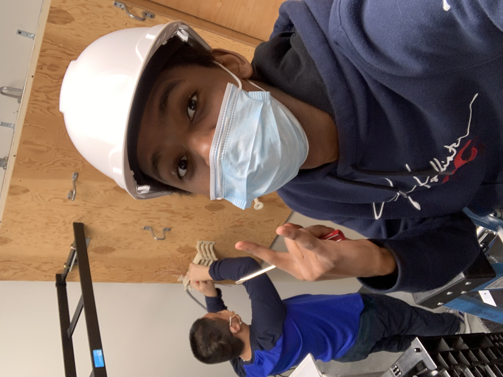

In 8th grade, I started playing around with “code”, I took computer science. in that class, we would use scratch to make the Sphero move. This class opened my eyes to what a programming language is. which are just sets of rules for the computer to follow/execute.
In my sophomore and junior years, I took networking. although it wasn’t for me it gave me a behind the scenes of what it takes for a simple local network to work and an understanding of how the Internet works as a whole.
The summer after my sophomore year I got a job at a nearby Subway I’ve been working there since. After working there for a while I got promoted to shift lead since I couldn’t be an assistant manager with the school. Throughout all this time, I've learned how to lead by example and making sure things run smoothly on a day-by-day basis.

I am currently a student College of Western Idaho (CWi) in my first semester working towards my associate in software development. since the 8th grade when I was telling a sphere to move in scratch, I knew it was what I wanted to do as a career. Now I am just trying to make that dream a reality.